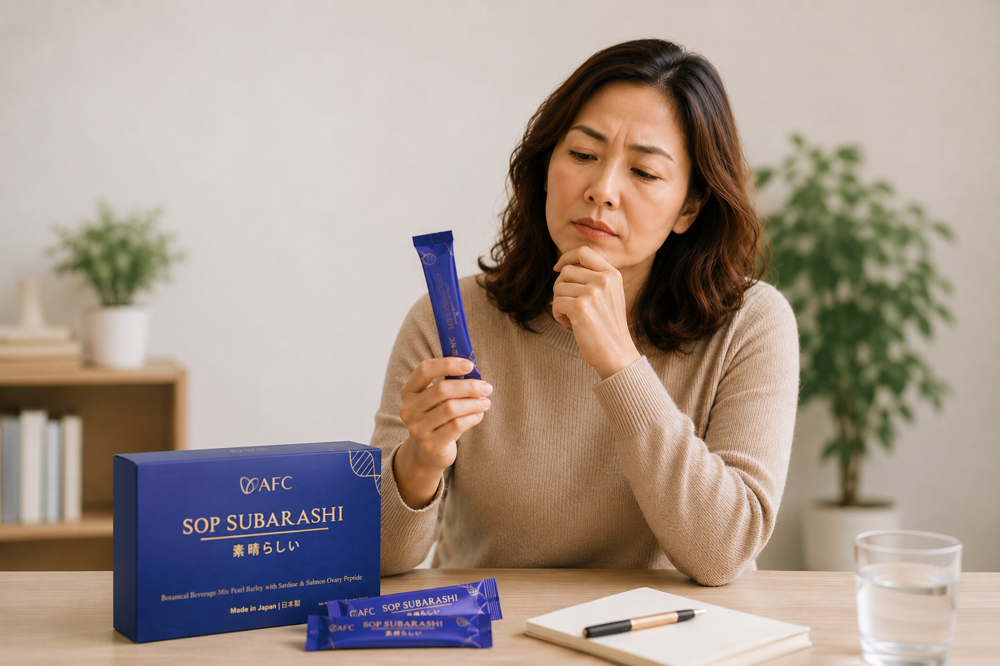
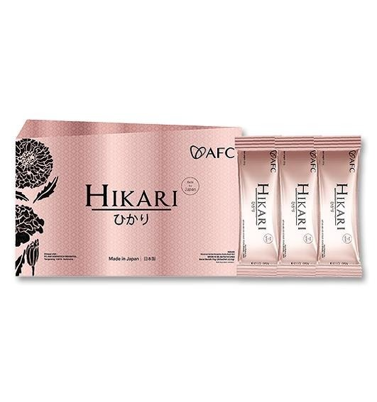
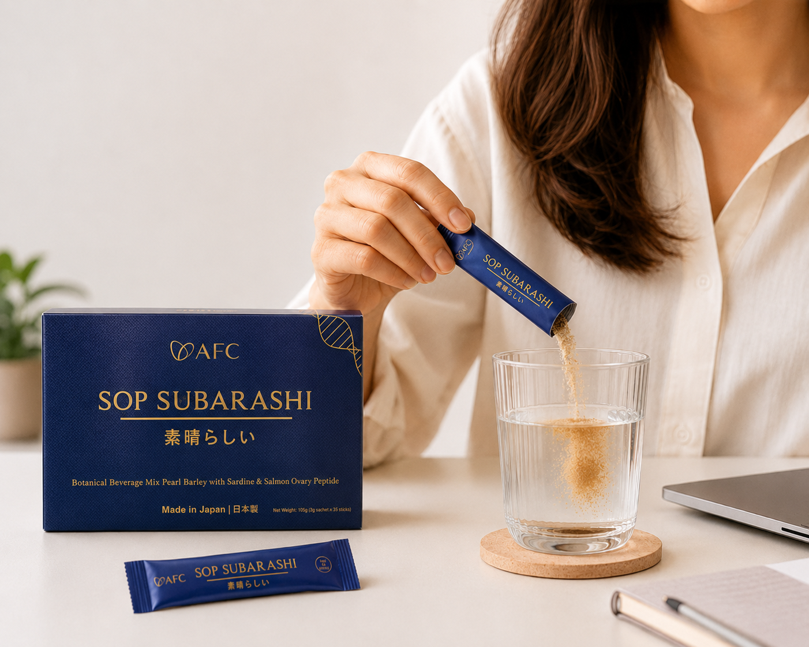

Jujur, aku gak gampang percaya produk kesehatan.
Sampai akhirnya badan sendiri yang bikin sadar kalau kesehatan gak bisa ditunda terus.
Pelajari Subarashi
"Makin bertambah usia, badan memang gak bisa dipaksa terus."
Dulu begadang sedikit masih kuat. Lembur sampai malam, besoknya tetap bisa kerja seperti biasa.
Sekarang? Aktivitas yang dulu terasa ringan, mulai bikin badan cepat capek dan butuh waktu lebih lama buat pulih.
Padahal sering kali itu bukan karena umur semata. Tubuh cuma lagi kasih tanda kalau dia butuh perhatian lebih.
Tanpa sadar, kebiasaan ini terus terjadi setiap hari.
Makan sekadarnya, nutrisi sering gak terpenuhi
Kerjaan, stres, dan aktivitas yang gak ada habisnya
Tidur kurang berkualitas dan waktu istirahat makin sedikit
Pernah gak sih ngerasa seperti ini?
- Badan cepat capek padahal aktivitas gak terlalu berat
- Bangun tidur tapi rasanya masih kurang segar
- Leher, bahu, atau pinggang sering pegal tanpa sebab jelas
- Pemulihan badan terasa lebih lama dibanding dulu
- Stamina gampang turun saat aktivitas sedang padat
Masalahnya, banyak orang baru peduli setelah tubuh mulai "protes".
Padahal menjaga kesehatan jauh lebih mudah dibanding memperbaikinya saat kondisi sudah menurun.
Karena itu, penting untuk mulai memberikan nutrisi yang dibutuhkan tubuh sejak sekarang.

AFC SOP Subarashi
Suplemen premium dari Jepang yang dirancang untuk membantu menjaga vitalitas tubuh, mendukung regenerasi sel, dan membantu menjaga daya tahan tubuh tetap optimal.
Praktis dikonsumsi setiap hari sebagai bagian dari investasi kesehatan jangka panjang.
Lihat Manfaat UtamaKenapa Banyak Orang Memilih SOP Subarashi?
Membantu Regenerasi Sel Tubuh
Tubuh terus memperbaiki dan memperbarui sel setiap hari. SOP Subarashi membantu mendukung proses regenerasi alami tersebut agar tubuh tetap prima.
Membantu Menjaga Sirkulasi Darah
Aliran darah yang baik membantu nutrisi dan oksigen tersalurkan ke seluruh tubuh secara optimal.
Standar Kualitas Jepang
Diproduksi dengan standar farmasi Jepang dan kualitas yang telah dipercaya selama puluhan tahun.
Apa yang kamu lakukan hari ini akan menentukan kualitas hidupmu beberapa tahun ke depan.
Cukup 1 sachet sehari untuk membantu menjaga vitalitas tubuh, daya tahan, dan kesehatan organ sejak sekarang. Karena tubuh yang sehat bukan hasil dari satu hari, tapi dari kebiasaan yang dilakukan setiap hari.

Sehat itu murah. Yang mahal kalau sudah harus berobat.
Masih bingung apakah SOP Subarashi cocok untuk kebutuhan kamu?
Chat tim kami lewat WhatsApp. Konsultasi gratis dan tanpa kewajiban membeli.
Konsultasi Gratis via WhatsApp